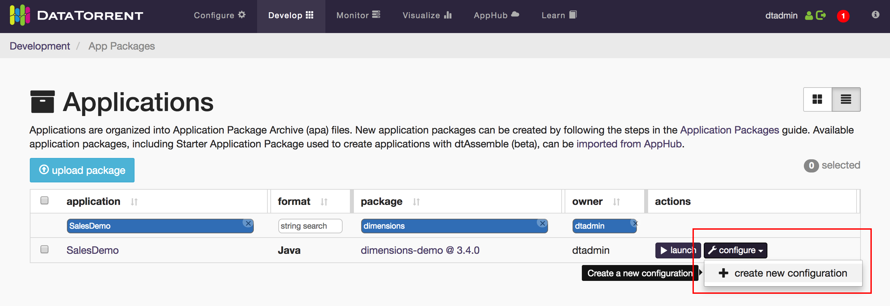
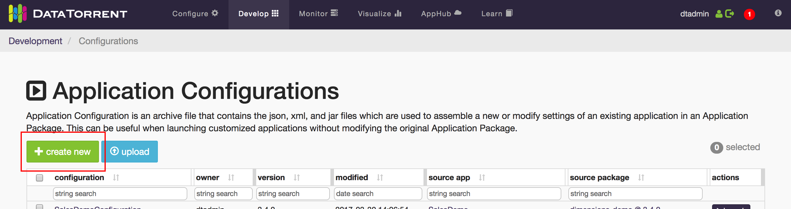
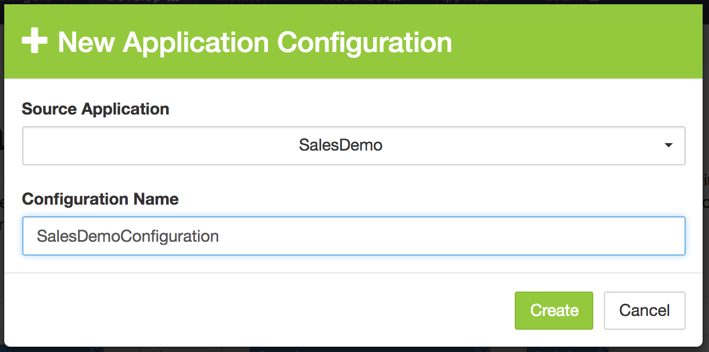
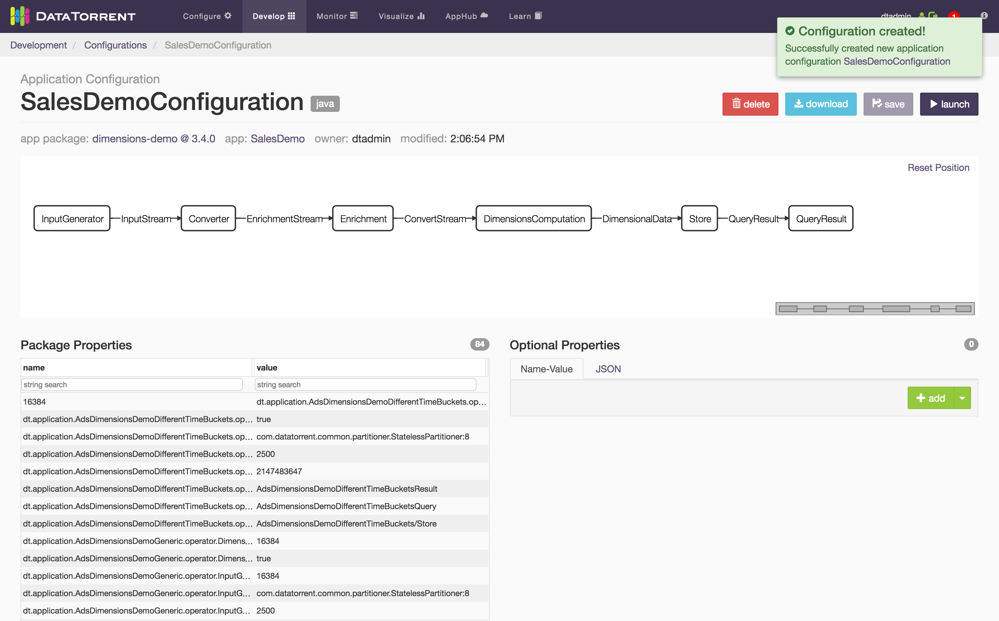
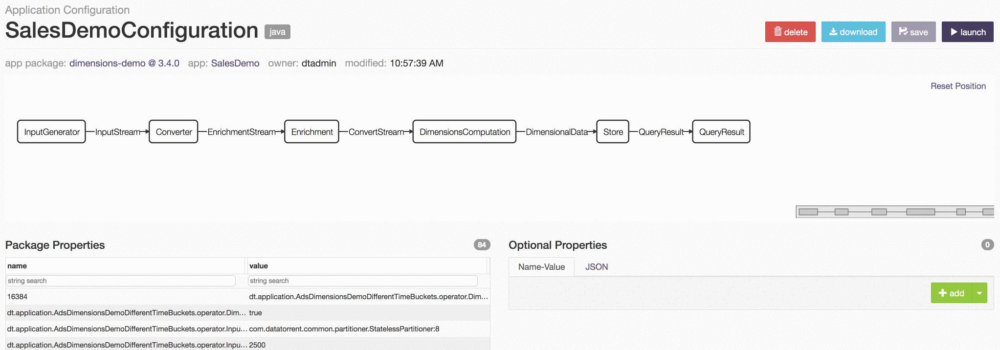
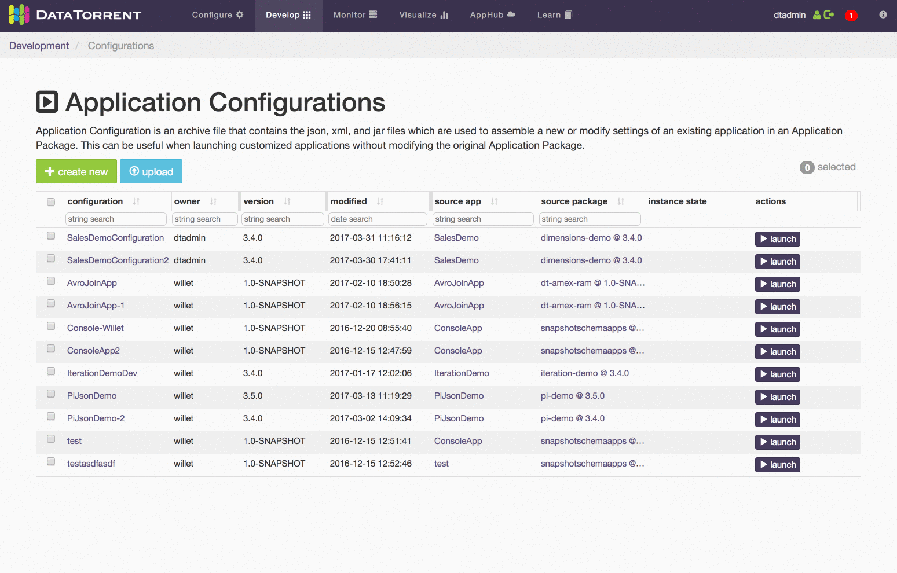
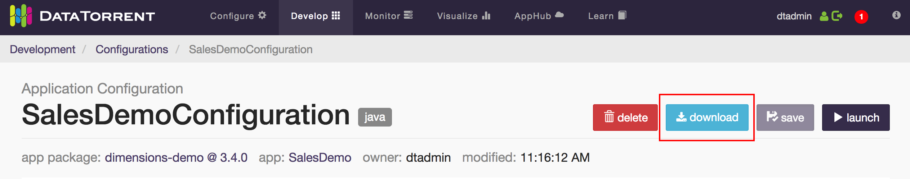
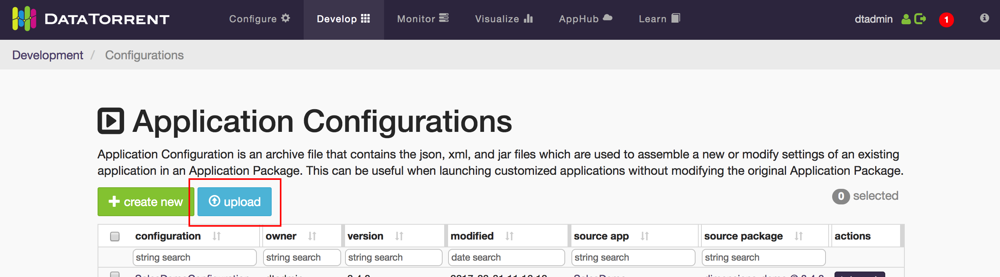
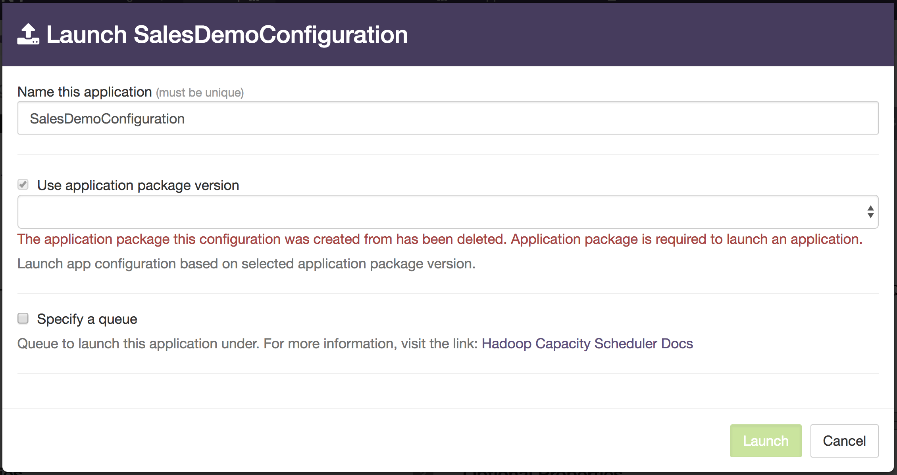

Application Configurations
Application Configurations can be thought of as wrappers for Applications. You create a Configuration with properties that override and supplement the ones already set in the original Application.
You may find Application Configurations to be particularly useful if:
- You use the Specify Launch Properties option when launching Applications and want the properties to persist.
- Users want to share their Configurations of the same Application.
Creating an Application Configuration
- Navigate to either the Applications page or the Application Configurations page in the Develop section.
- If you're on the Applications page, click the configure button next to the Application you want to configure, and then click create new configuration.  Or if you're on the Application Configurations page, click on the create new button. 
- Select the Source Application from the dropdown (preselected if you used the configure button), choose a unique Configuration Name, and click the create button. 
- Once the Configuration is created, you will be navigated to the newly created Application Configuration's page.
Modifying Properties of an Application Configuration
Properties set in an Application Configuration will override any existing properties of the Application. These properties can be Operator level properties or even Application Package level. To see a list of existing properties, go to the Application Configuration's page.

- Package Properties: Shows the existing properties of the Application. This table is useful for reference when specifying Optional Properties.
- Optional Properties: This is where you can add/edit/remove Application property overrides. The properties and values you specify here will take precedence over the existing Package Properties. The JSON tab allows you to copy-and-paste properties in JSON format.

NOTE: Package Properties can be copied into your clipboard by double-clicking the name field of the property. You can then paste it when creating Optional Properties.
When you have finished modifying your properties, remember to click the save button in the top-right corner of the page.
Launching an Application Configuration
Application Configurations have to be launched just like Applications. They can be launched from the list view (table), or from the Configuration's page itself:

Exporting and Importing Application Configurations
Application Configurations can be exported and downloaded as .apc files.

Exported .apc files can be imported by uploading them on the Application Configurations page.

JSON Application Configurations
Application Configurations of JSON Applications (dtAssemble) differ from Application Configurations of Java Applications in several ways:
- When creating a Configuration of a JSON Application, the entire JSON Application is copied into the Configuration.
- The original JSON Application and its Configurations are decoupled. Any modifications to either would not affect the other. They still rely on the same Package resources (e.g. Operators).
Deleting Applications with Existing Application Configurations
If an Application with existing Application Configurations is deleted, the Application Configuration can no longer be launched.

The launch functionality will be restored if you re-upload the Application.